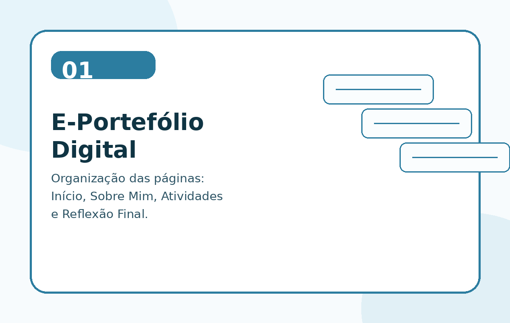
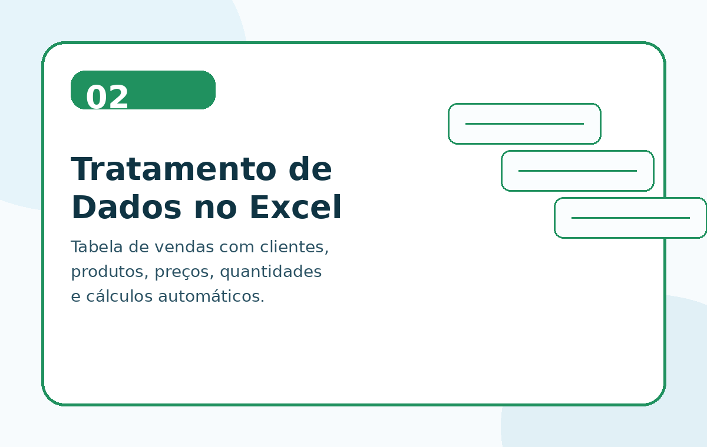
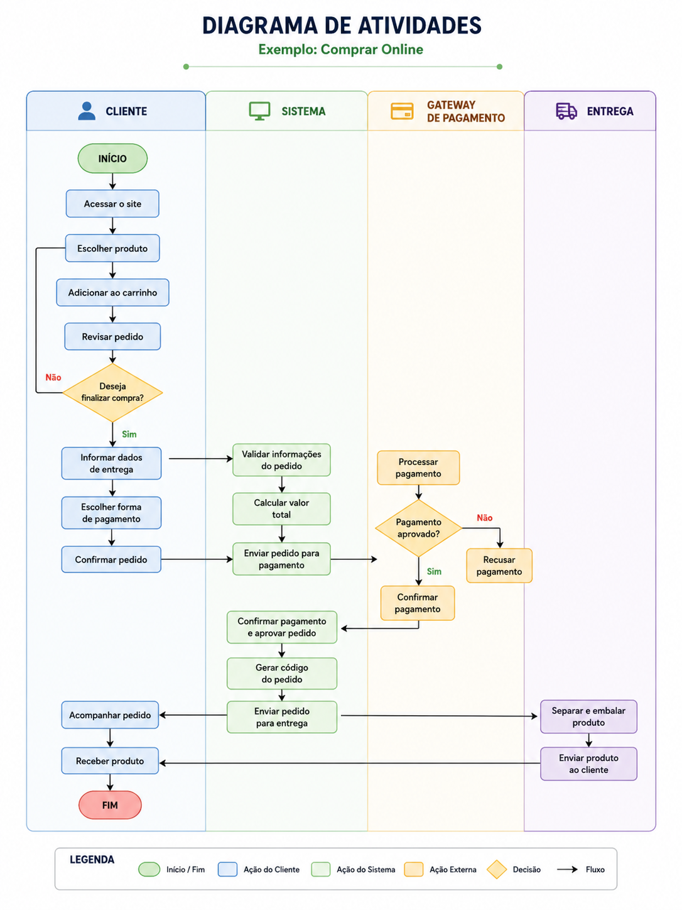
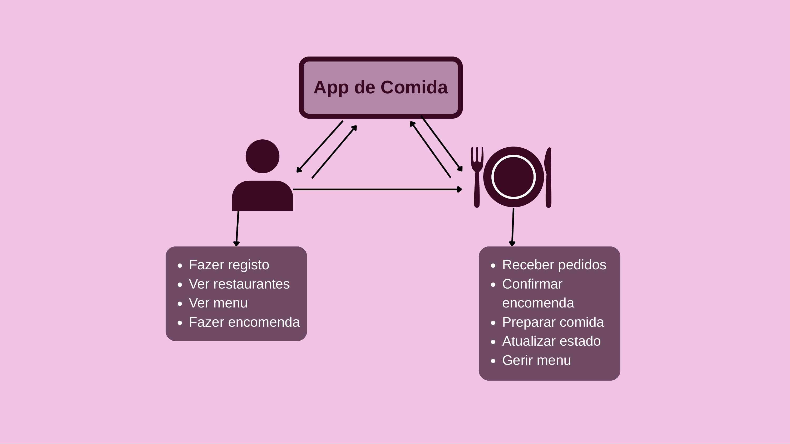
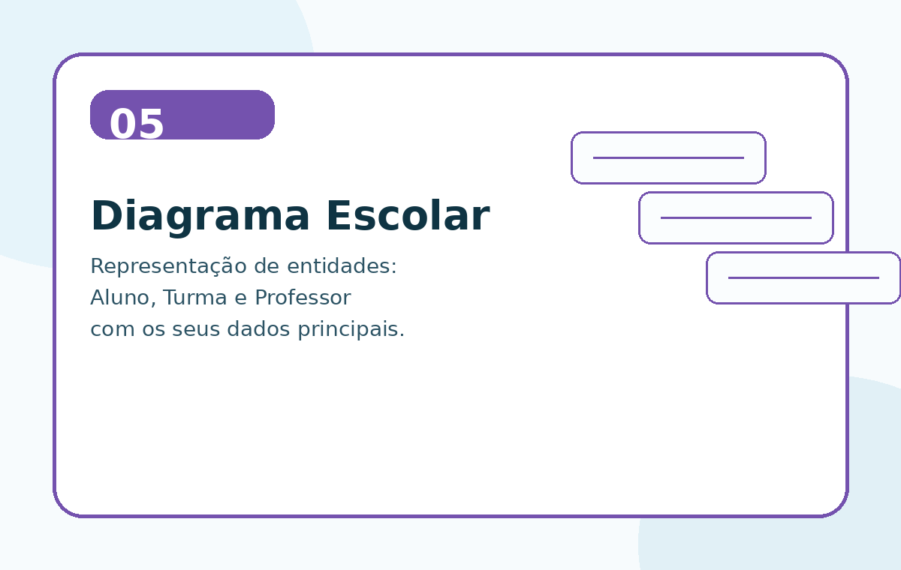
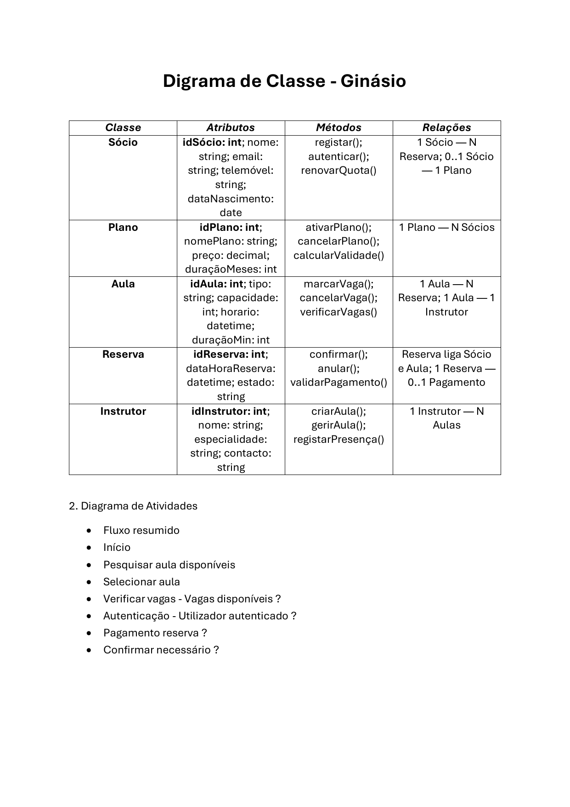
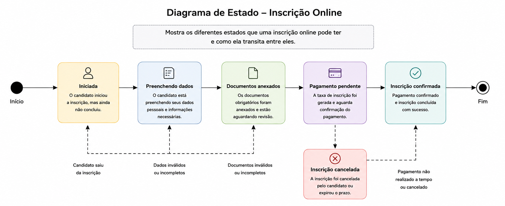
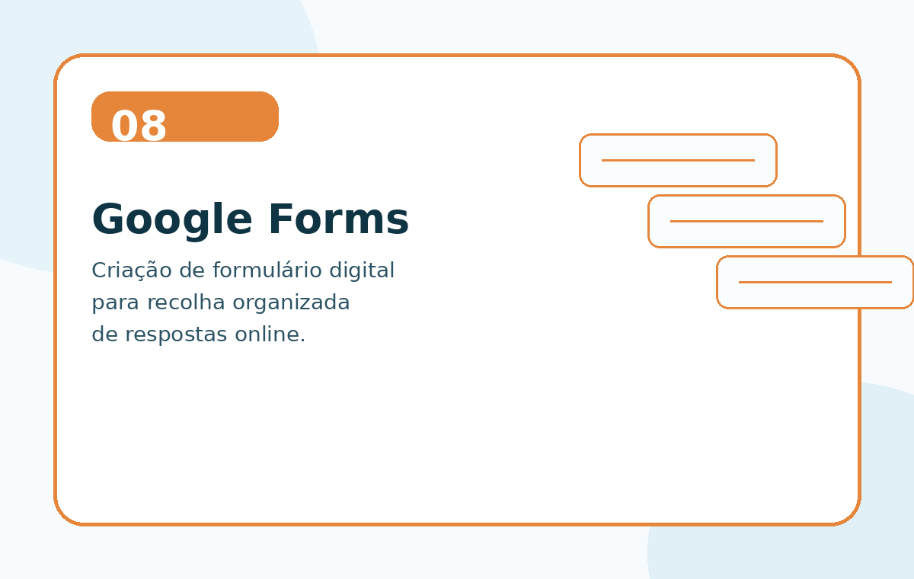
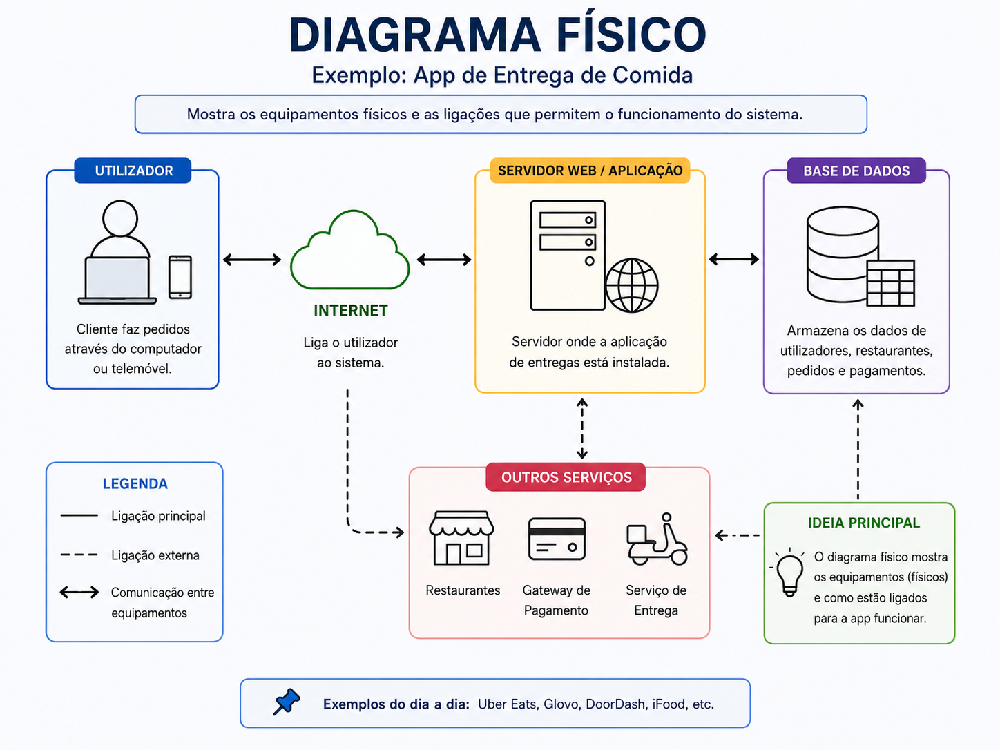
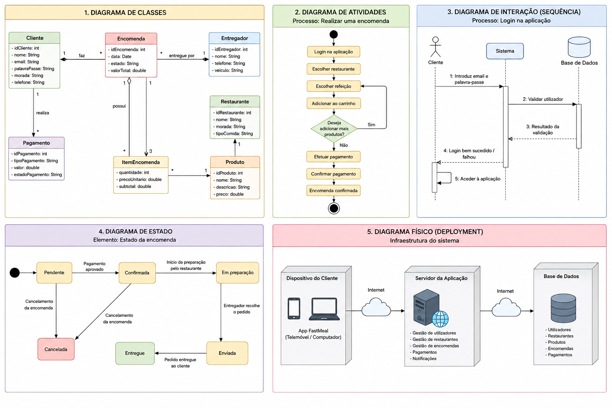

Página Inicial
Bem-vindo ao meu e-portefólio digital. Chamo-me Felipe Rocha Barbosa e estou a frequentar o curso de Sistemas de Informação.
Tenho interesse por tecnologia, programação, design, criação de projetos digitais e desenvolvimento de soluções práticas que possam ajudar pessoas e empresas.
Objetivo do Portefólio
Este portefólio tem como objetivo apresentar o meu percurso de aprendizagem, os trabalhos realizados durante a formação e a minha evolução ao longo do tempo.
Sobre Mim
Sou o Felipe Rocha Barbosa, aluno do curso de Sistemas de Informação. Gosto de aprender coisas novas, principalmente nas áreas de programação, tecnologia, design, criação de conteúdos e desenvolvimento de projetos digitais.
Tenho interesse em criar sistemas úteis, automatizar tarefas e desenvolver soluções que facilitem o trabalho das pessoas. Ao longo do curso, quero melhorar os meus conhecimentos em informática, programação, bases de dados, desenvolvimento web e ferramentas digitais.
Expectativas para o futuro
No futuro, espero trabalhar numa área ligada à tecnologia, onde possa juntar lógica, criatividade e resolução de problemas. Quero continuar a evoluir como profissional, ganhar experiência prática e desenvolver projetos cada vez mais completos.
Etapas do E-Portefólio
A estrutura do meu e-portefólio está organizada em quatro partes principais:
Página Inicial
Apresentação geral, nome, curso e objetivo do portefólio.
Sobre Mim
Informações pessoais, académicas, interesses e expectativas futuras.
Atividades
Trabalhos realizados, aprendizagens, dificuldades e autoavaliação.
Reflexão Final
Resumo da evolução pessoal e técnica ao longo do curso.
Atividades e Projetos
Atividade 1 — Criação do E-Portefólio Digital

Nesta atividade, aprendi a criar um e-portefólio digital para organizar e apresentar os meus trabalhos, aprendizagens e evolução ao longo do curso.
O que aprendi
Aprendi a organizar informação num formato digital, separar conteúdos por secções e apresentar o meu percurso de aprendizagem de forma clara e visualmente agradável.
Dificuldades encontradas
A principal dificuldade foi perceber como organizar o conteúdo de forma simples, mas completa.
Autoavaliação
Considero que tive um bom desempenho, porque consegui compreender a finalidade do e-portefólio.
Atividade 2 — Tratamento de Dados no Excel

Nesta atividade, trabalhei com uma tabela em Excel relacionada com vendas de produtos.
O que aprendi
Aprendi que dados isolados podem ser transformados em informação útil através de cálculos e organização.
Dificuldades encontradas
Uma das dificuldades foi compreender como os valores da tabela se relacionavam entre si.
Autoavaliação
O meu desempenho foi positivo, porque consegui perceber como dados brutos podem ser transformados em informação relevante.
Atividade 3 — Diagrama de Atividades: Comprar Online

Desenvolvi um diagrama de atividades para representar o processo de compra online, desde o acesso ao site até à receção do produto.
O que aprendi
Aprendi a representar visualmente um processo, identificando quem realiza cada ação e como as decisões afetam o fluxo.
Dificuldades encontradas
A maior dificuldade foi organizar o processo sem misturar as ações do cliente, do sistema, do pagamento e da entrega.
Autoavaliação
Consegui representar um processo completo e fácil de compreender.
Atividade 4 — App de Comida

Foi criada uma representação simples de uma aplicação de comida, mostrando a interação entre o utilizador, a aplicação e o restaurante.
O que aprendi
Aprendi a identificar funcionalidades principais de uma aplicação e a separar ações de diferentes utilizadores dentro de um sistema.
Dificuldades encontradas
A dificuldade principal foi decidir quais funcionalidades eram essenciais.
Autoavaliação
Consegui entender melhor como uma aplicação pode ser pensada a partir das necessidades dos seus utilizadores.
Atividade 5 — Diagrama com Aluno, Turma e Professor

Criei um diagrama relacionado com o contexto escolar, representando entidades como Aluno, Turma e Professor.
O que aprendi
Aprendi a identificar entidades, atributos e relações básicas dentro de um sistema.
Dificuldades encontradas
A dificuldade foi perceber quais informações deveriam ficar dentro de cada entidade.
Autoavaliação
Esta atividade ajudou a desenvolver melhor o raciocínio sobre sistemas e organização de dados.
Atividade 6 — Diagrama de Classe: Ginásio

Trabalhei num diagrama de classes para representar um sistema de ginásio, com classes, atributos, métodos e relações.
O que aprendi
Aprendi a estruturar melhor um sistema usando classes e a perceber como os objetos se relacionam entre si.
Dificuldades encontradas
A principal dificuldade foi definir corretamente as relações entre as classes.
Autoavaliação
Consegui representar um sistema mais completo e compreender melhor a lógica da modelação orientada a objetos.
Atividade 7 — Diagrama de Estado: Inscrição Online

Desenvolvi um diagrama de estado para mostrar os diferentes estados que uma inscrição online pode ter até ser concluída ou cancelada.
O que aprendi
Aprendi que um diagrama de estado representa as fases pelas quais um processo pode passar.
Dificuldades encontradas
A dificuldade foi organizar os estados de forma coerente e representar quando a inscrição podia voltar atrás ou ser cancelada.
Autoavaliação
O resultado ficou claro e bem estruturado.
Atividade 8 — Formulário no Google Forms

Foi criado um formulário através do Google Forms para recolher respostas de forma organizada.
O que aprendi
Aprendi a usar o Google Forms como ferramenta de recolha de dados.
Dificuldades encontradas
A dificuldade principal foi estruturar perguntas de forma clara.
Autoavaliação
A atividade ajudou a compreender como ferramentas digitais podem recolher e organizar informação.
Atividade 9 — Diagrama Físico: App de Entrega de Comida

Desenvolvi um diagrama físico para representar os equipamentos, serviços e ligações necessários para o funcionamento de uma app de entrega de comida.
O que aprendi
Aprendi que um sistema digital depende de componentes físicos e externos, como servidores, internet, bases de dados e serviços de pagamento.
Dificuldades encontradas
A principal dificuldade foi perceber quais elementos deveriam aparecer no diagrama físico.
Autoavaliação
Consegui representar de forma clara a estrutura física necessária para o funcionamento da aplicação.
Atividade 10 — FastMeal: Diagramas de Caso de Estudo

Nesta atividade, foi desenvolvido um conjunto de diagramas para o projeto FastMeal, uma aplicação de encomenda e entrega de comida. O trabalho mostra diferentes visões do mesmo sistema, desde a estrutura das classes até ao funcionamento físico da aplicação.
Descrição breve da atividade
O projeto inclui cinco diagramas principais: diagrama de classes, diagrama de atividades, diagrama de interação/sequência, diagrama de estado e diagrama físico. Cada diagrama representa uma parte diferente do sistema, como clientes, encomendas, pagamentos, restaurantes, entregadores, login, confirmação de pagamento e infraestrutura da aplicação.
O que aprendi
Aprendi que um sistema pode ser analisado de várias formas. O diagrama de classes mostra a estrutura dos dados, o diagrama de atividades mostra o fluxo da encomenda, o diagrama de sequência mostra a comunicação entre cliente, sistema e base de dados, o diagrama de estado mostra as fases da encomenda e o diagrama físico mostra a infraestrutura necessária para o sistema funcionar.
Dificuldades encontradas
A principal dificuldade foi organizar vários tipos de diagramas sem confundir a função de cada um. Também foi necessário manter coerência entre as informações representadas em cada diagrama.
Como ultrapassei os desafios
Ultrapassei os desafios separando o sistema por perspetivas: estrutura, fluxo, comunicação, estado e infraestrutura. Assim, ficou mais fácil perceber o papel de cada diagrama dentro do projeto.
Autoavaliação
Considero que esta atividade foi uma das mais completas, porque reuniu vários conceitos de modelação de sistemas. O meu desempenho foi positivo, pois consegui representar o projeto FastMeal de forma mais profissional e organizada.
Reflexão Final
Durante estas atividades, aprendi que um e-portefólio não serve apenas para guardar trabalhos, mas também para mostrar a evolução de uma pessoa ao longo do tempo.
O que mais gostei de fazer foi personalizar o portefólio e pensar em como apresentar melhor o meu percurso. As atividades também ajudaram a desenvolver capacidades de organização, análise de sistemas e representação visual de processos.
Uma das dificuldades foi organizar as ideias de forma clara, mas consegui superar isso dividindo o conteúdo por páginas e por atividades.